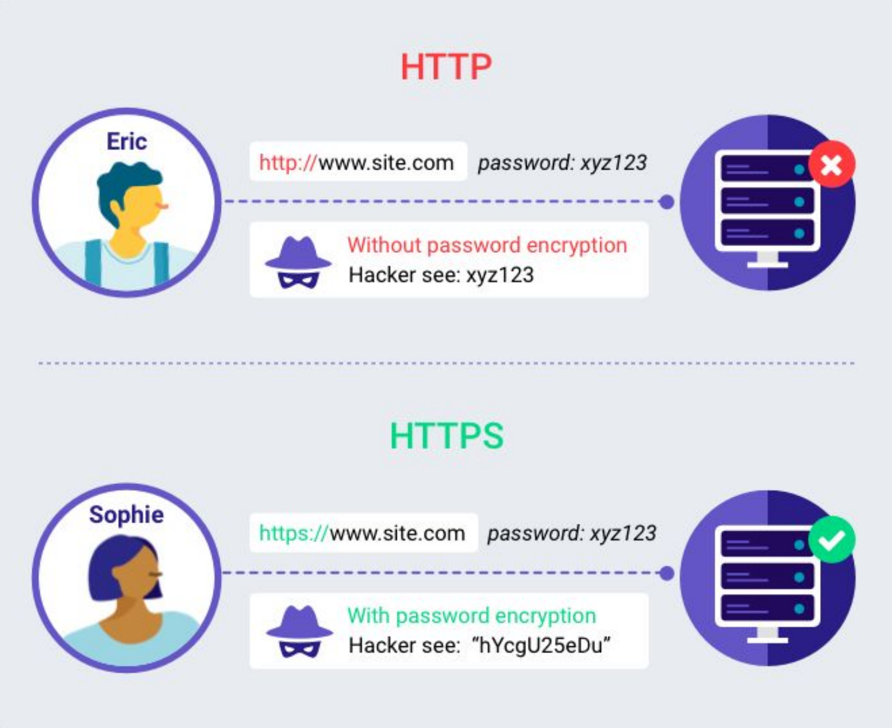
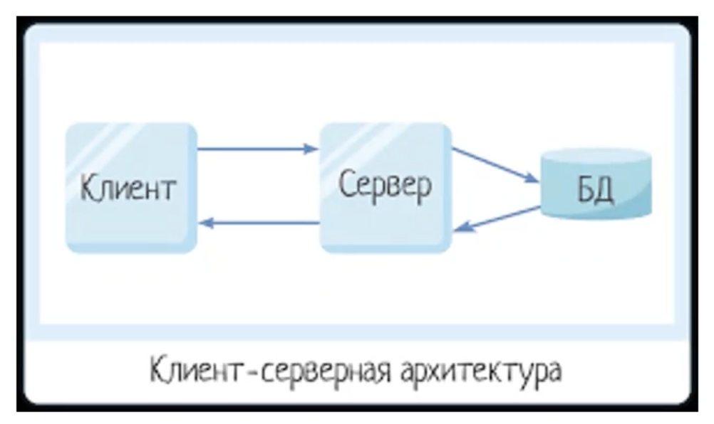
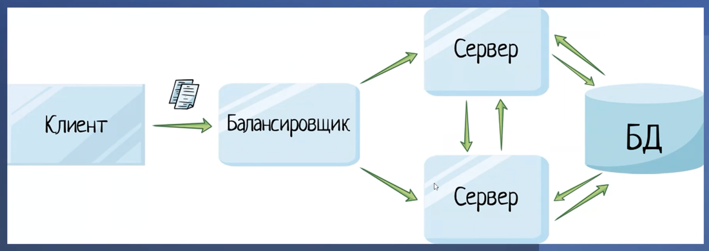
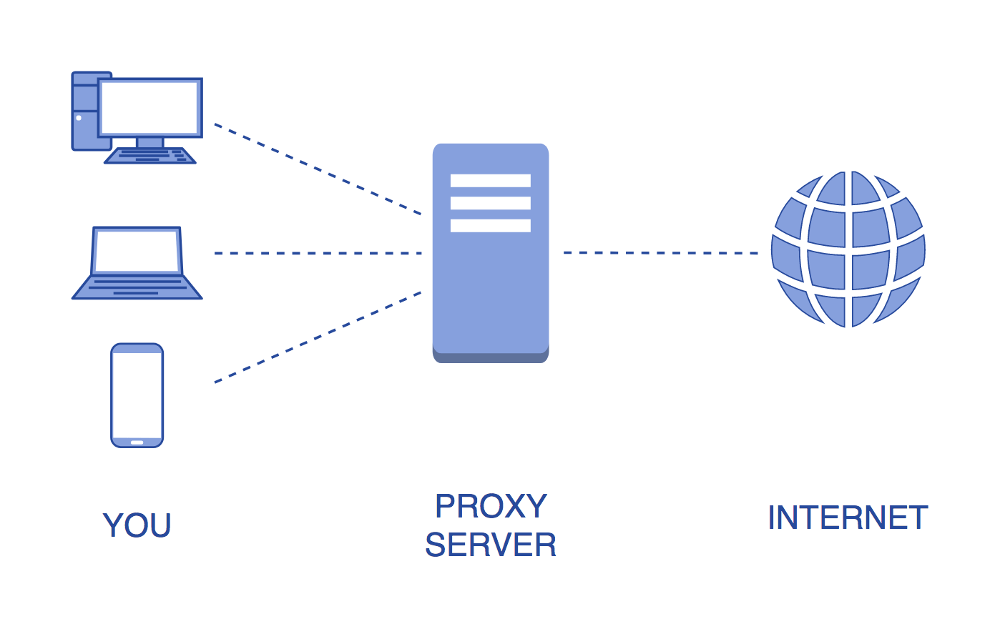
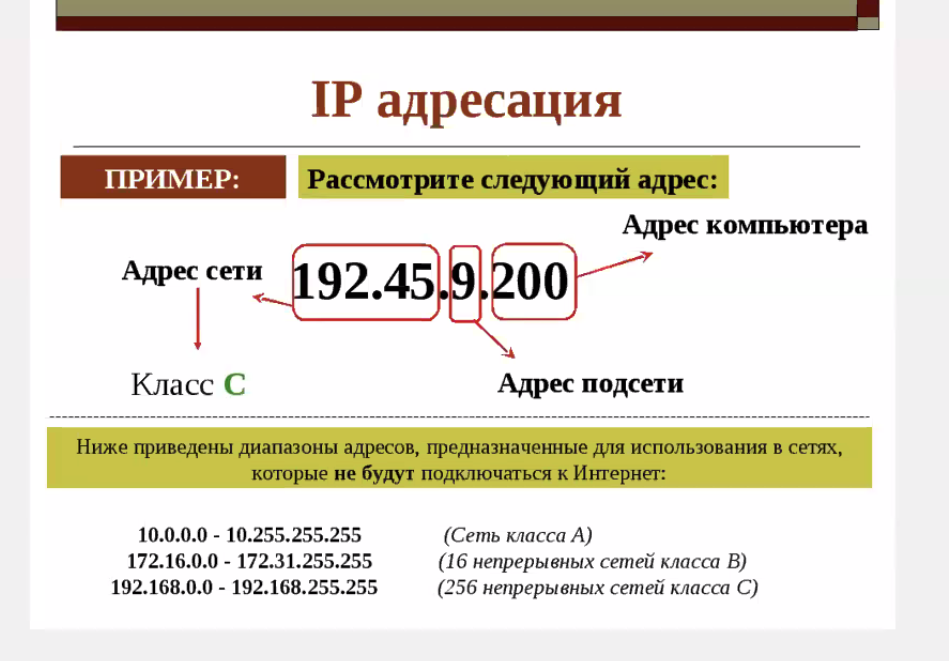
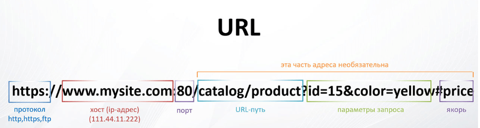
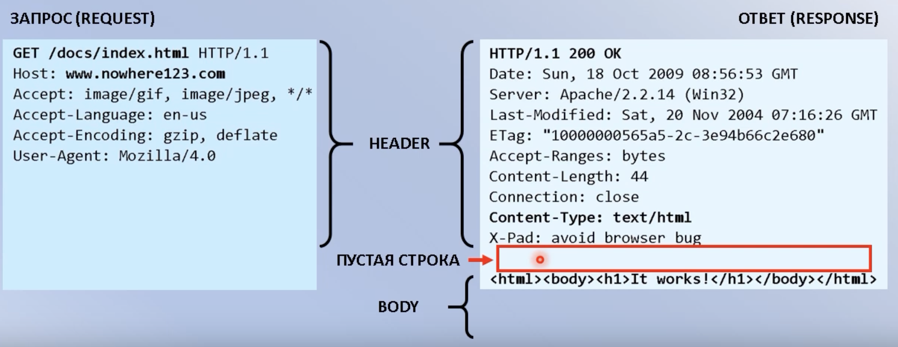
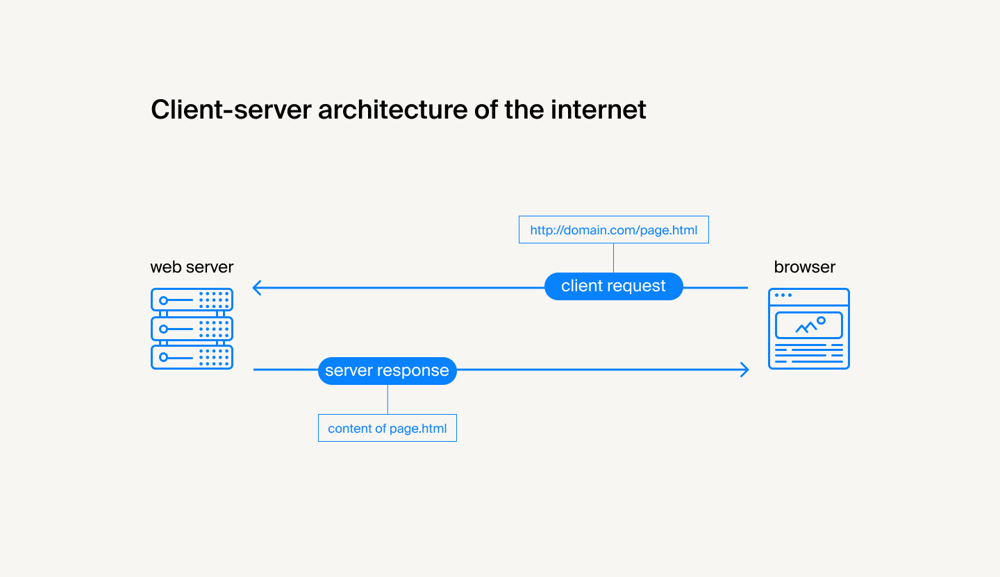
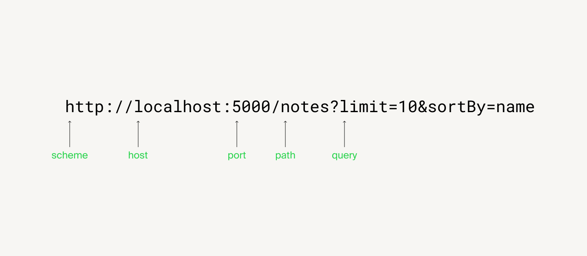

Сеть
- Модель Open Systems Interconnection (OSI);
- Тройное рукопожатие;
- Методы HTTP запроса;
- Коды ответа HTTP;
- HTTP State Management Mechanism;
- Заголовок Cookie: Cookie: name=value;
- Отличие идентификации, аутентификации и авторизации;
TCP/IP
TCP/IP - осно�вной сетевой протокол. Реализации TCP обычно встроены в ядра ОС.
Набор интернет-протоколов обеспечивает сквозную передачу данных, определяющую, как данные должны пакетироваться, обрабатываться, передаваться, маршрутизироваться и приниматься. Эта функциональность организована в четыре слоя абстракции, которые классифицируют все связанные протоколы в соответствии с объёмом задействованных сетей. От самого низкого до самого высокого уровня — это уровень связи, содержащий методы связи для данных, которые остаются в пределах одного сегмента сети; интернет-уровень, обеспечивающий межсетевое взаимодействие между независимыми сетями; транспортный уровень, обрабатывающий связь между хостами; и прикладной уровень, который обеспечивает обмен данными между процессами для приложений.
Порты TCP
- HTTP(S) - HyperText transfer protocol (secure). Основной протокол передачи данных между клиентом и сервером. Изначально был для передачи только html-файлов, а сейчас уже можно передавать всё что угодно (css, js, images, fonts, json и т.д.). Простой, быстрый, гибкий, многофункциональный. Версия протокола 1.1 или 2.0. (https:443, http:80)
- HTTP 1.1 - несколько соединений на различные типы файлов
- HTTP 2.0 - одно соединение на различные типы файлов
- WS - web-socket (:443, :80 поверх http)
- FTP - file (:21)
- SSH - cli (:22)
- SMTP (:25), POP3 - email (:110)
- Полный список

IP-адрес
IPv4-адрес: 188.232.244.17
IPv6-адрес: 1050:0:0:0:5:600:300c:326b
Адрес-идентификатор клиента или сервера в сети. С помощью этих адресом клиент знает куда посылать запрос, а сервер знает кому отдавать ответ.
Клиент-серверная архитектура

Трехуровневая архитектура (Клиент --> Серевер --> БД):
- Уровень представления
- Уровень логики
- Уровень данных
Построены все сайты и интернет-сервисы. Серверы и клиенты связаны вычислительными сетями через сетевые протоколы.
Недостатки:
- если будет неисправно хотя бы одно звено, то вся система будет неработоспособной, чтобы этого избежать используют кластер серверов.
- злоумушленники могут изъять данные не только с сервера или БД, но и "по пути" движения запроса (поэтому высокие требования к защите данных, https, шифрованию и т.д.)
Обработкой запросов занимается ОС и клиенский софт (например браузер) со стороны клиента и ОС и программа веб-сервер (с файлами конфигураторами) со стороны сервера.
Клиент
- Запросы идут от клиентов ("Заказчик услуг")
- ПО для клиента (frontend), браузеры, приложения
- Полученнная информация должна отобраться в понятном и доступном виде (json ---> сервер --> json --> html/css)
- Клиентов может быть огромное количество
Типы клиентов
- Тонкий клиент - низкая нагрузка на клиенте, вся логика на сервере. Клиент делает запрос и сервер все обрабатывает и выводит html (статичные сайты, минимум js).
- Толстый клиент - веб-приложения, которые выполняют какую-нибудь часть логики сами (SPA, 1С бухалтерия, игры, насыщенный графический интерфейс, js много).
- Богатый клиент - что-то среднее.
Сервер
- Сервер отвечает на запросы клиентов ("Поставщик услуг")
- Чаще всего на серверных компьютерах стоит ОС Linux (centOS)
- Должна быть высокая производительность (нагрузка на сервер)
- ПО для сервера (backend)
- Одновременно может обработать не более определенного числа запросов (чтобы не было перегрузки)
- Должен быть защищенным от вредоносных запросов, которые могут вывести его из строя
- Делает запросы к сереверу БД
- Отказоустойчивость
- DATA-центры

Если в архитектуре имеется кластер серверов, то ставится дополнительный промежуточный сервер-балансировщик, который выбирает доступный сервер для клиента (используется для высоконагруженных приложений).
Типы серверов
- Web-сервер - серверы с доступом к данным по http-протоколу
- Серверы БД - серверы с доступом к БД
- SQL
- noSQL
- PostgreSQL
- MongoDB
- Файловые серверы - файлохранилище
- Почтовые серверы - для рассылки на email
- Серверы приложений - доступ к сторонним API
- Прокси-сервер - промежуточный nhfypbnysq сервер. Нужно, чтобы сымитировать запрос или ускорения пути движения запроса. Как будто запрос исходит не с вашего локального IP, а с другого удаленного. Безопасность, неотслеживаемость.

БД
- Данные хранятся на сервере БД
- Просто большие таблицы с полями поле-значение
- Повышенные требования к защите информации (персональные данные)
- Если на сервере произошли какие-то сбои, то вся необходимаяя информация должна будет остаться в БД, и эти данные позже можно будет восстановить
- Может быть также кластеры БД с сервером-балансировщиком
- Клиент напрямую не общается с сервером БД, только через основной веб-сервер приложения
Запросы
При каждом запросе сначала срабатывает DNS-lookup, котоый ищет IP-адрес требуемого ресурса у системы DNS-серверов, потом эта информация по IP-адресу храниться в кэше клиента, чтобы постоянно не обращаться к DNS.
- Методы
- GET - получить данные (можно указывать query-параметры через ?)
http://some-url.com/endpoint?param1=value1¶m2=value2&sort=name,asc - POST - отправить данные
- PUT - полное изменение ресурса (типа UPDATE)
- PATCH (aналог PUT) - частичное изменение ресурса
- DELETE - удаление ресурса
- OPTIONS - тестовый метод, который вернет все поддерживаемые запросы к серверу
- TRACE - тестовый метод, возвращает полученный запрос так, что клиент может увидет, что промежуточные сервера добавляют или изменяю в запросе (устаревший)
- LINK/UNLINK/CONNECT - устаревшие
- GET - получить данные (можно указывать query-параметры через ?)
- URL запроса, куда он будет отправленА
- Заголовки запроса (headers), где хранятся данные запроса, поле-значение
- Код ответа сервера
- Содержимое запроса (body, form data)
- Содержимое ответа (json - более популярный или xml - более читаемый, но лишние символы)
IP-адрес

URL
Uniform Resource Locator. Человекочитабильная обертка IP-адреса.

URL-адрес ---> DNS-сервер (конвертирует URL в IP-адрес) --> Запрос на этот IP --> Ответ клиенту
GET/index.html HTTP/1.1
Host: www.some-site.com
User-agent: ...
HTTP/1.1 200 OK
Content-Type: text/html; charset=UTF-8
Content-Length: 208
Headers
- General
- Request
- Response
- Representation (Content-Type, Content-Encoding, Content-Language, and Content-Location)
- Entity (устаревшие заголовки сущности - Allow, Content-Encoding, Length, Type и др.)
Служебная информация. Сервер обрабатывает сначала заголовки запроса, а уже потом тело запроса.
Клиентские заголовки
- GENERAL
- Request URL: http://localhost:3000/knowledge-bank/img/logo.svg
- Request Method: GET
- Status Code: 200 OK
- Remote Address: 127.0.0.1:3000
- Referrer Policy: strict-origin-when-cross-origin
- REQUEST HEADERS
- Accept: image/avif,image/webp,image/apng,image/svg+xml,image/*,*/*;q=0.8
- Accept-Encoding: gzip, deflate, br
- Accept-Language: ru-RU,ru;q=0.9,en;q=0.8,en-US;q=0.7
- Cache-Control: no-cache
- Connection: keep-alive
- Cookie: _ym_uid=1652945145444754001; _ym_d=1655273573
- Host: localhost:3000
- Pragma: no-cache
- Referer: http://localhost:3000/knowledge-bank/docs/backend/http/
- sec-ch-ua: "Chromium";v="106", "Google Chrome";v="106", "Not;A=Brand";v="99"
- sec-ch-ua-mobile: ?0
- sec-ch-ua-platform: "macOS"
- Sec-Fetch-Dest: image
- Sec-Fetch-Mode: no-cors
- Sec-Fetch-Site: same-origin
- User-Agent: Mozilla/5.0 (Macintosh; Intel Mac OS X 10_15_7) AppleWebKit/537.36 (KHTML, like Gecko) Chrome/106.0.0.0 Safari/537.36
- RESPONSE HEADERS
- Accept-Ranges: bytes
- access-control-allow-origin: *
- Cache-Control: public, max-age=0
- Connection: keep-alive
- Content-Encoding: gzip
- Content-Type: image/svg+xml
- Date: Sat, 29 Oct 2022 09:40:42 GMT
- ETag: W/"1926-18391797ae0"
- Keep-Alive: timeout=5
- Last-Modified: Sat, 01 Oct 2022 02:56:41 GMT
- Transfer-Encoding: chunked
- Vary: Accept-Encoding
- X-Powered-By: Express
Серверные заголовки
Server: Apache/2.2.3 (CentOS 7.0)
Content-type: text/html; charset=UTF-8
Accept-Ranges: bytes
Data: Thu, 03 Mar 2011 04:04:36 GMT
Age: 51
Content-Length: 2945
Connection: keep-alive
200 OK
Status codes
100 – 199 - Informational responses 🔵
- 100 Continue
- 101 Switching Protocols
- 103 Early Hints
200 – 299 - Successful responses ✅
- 200 OK
- 201 Created
- 202 Accepted
- 203 Non-Authoritative Information
- 204 No Content
- 205 Reset Content
- 206 Partial Content
300 – 399 - Redirection messages ⏩
400 – 499 - Client error responses ❌
- 400 Bad Request
- 401 Unauthorized
- 402 Payment Required
- 403 Forbidden
- 404 Not Found
- 405 Method Not Allowed
- 414 URI Too Long
500 – 599 - Server error responses ❌
- 500 Internal Server Error
- 501 Not Implemented
- 502 Bad Gateway
- 503 Service Unavailable
Тело запроса / Request body / Request Data / Form data / Payload

Тело запроса или ответа отделено пустой строкой. Можно посмотреть во вкладке Payload/Preview.
Html, который приходит по get-запросу располагается как раз в body.
При post-запросах данные отправляются в формате json. Пример payload:
{
"email": "EvgenyLeukhin@yandex.ru",
"answer": "1234",
"captchaCode": "45439daf-39e8-a71f-0434-d4c88b3cbb08"
}
от Яндекс
HTTP (HyperText Transfer Protocol — «протокол передачи гипертекста») — протокол прикладного уровня передачи данных (изначально — в виде гипертекстовых документов в формате HTML), в настоящий момент используется для передачи произвольных данных.
В этом определении имеются в виду версии протокола до HTTP/2. Про HTTP/2 будем говорить отдельно. HTTP — это самый верхний уровень модели OSI. Если для вас слова «модель» и «OSI» что-то новое или же просто хотите освежить память — как минимум прочитайте это описание. В начале «общения» клиента и сервера, клиент отправляет запрос на установление соединения. Идёт так называемое «тройное �рукопожатие» («Договор» между сервером и клиентом о начальном числе последовательности пакетов, а также о ряде других переменных, связанных с соединением). Если соединение прошло успешно, между ними начинается обмен информацией.

Адрес ресурса состоит из нескольких частей:

Запросы и ответы
Запрос, как и ответ — это просто текст, составленный по определённым правилам. Запрос состоит из следующих частей:
- строки самого запроса,
- заголовков,
- тела запроса (опционально).
Строка запроса всегда пишется первой и формируется по правилу: “METHOD URI HTTP/VERSION”. Далее, через \r\n (перенос строки) записываются заголовки в формате key: value. В запрос можно вставить тело:
GET /index.html HTTP/1.1
Host: praktikum.yandex.ru
Content-Type: text/html; charset=utf-8
другие заголовки...
тело запроса (опционально)
POST /chats HTTP/1.1
Accept: application/json
Accept-Encoding: gzip, deflate
Content-Type: application/json; charset=utf-8
Host: localhost:8080
User-Agent: HTTPie/0.9.3
{
"name": "http"
}
Ответ приходит тоже в текстовом виде и содержит все те же самые части, что и запрос: строка статуса, заголовки и тело.
Строка статуса сформирована по правилу “HTTP/VERSION STATUS_CODE REASON_PHRASE”. Строки ответа также разделены переносами.
HTTP/1.1 200 OK
Content-Length: 67
Content-Type: application/json; charset=utf-8
Date: Wed, 16 Mar 2016 14:32:18 GMT
X-Powered-By: Express
{
"createdAt": 1458138738899,
"name": "http"
}
Составные части запроса и ответа
Метод запроса
Запрос может иметь разные методы, которые нужны в первую очередь для семантики. Многие ставят ограничение на тело у GET-метода (избегают его использования), но стандарт этого не запрещает. Однако стоит писать семантически, поскольку это помогает избежать множества проблем, сделать интерфейс декларированным, удобным и читаемым в первую очередь для разработчиков.
- GET — получение ресурса,
- POST — создание ресурса,
- DELETE — удаление ресурса,
- PUT — изменение ресурса. Про отличие от PATCH можно почитать в стандарте, описанном выше по ссылке у RFC,
- остальные.
Код ответа
Ответ на запрос может иметь разные коды. Важно знать, что означают как минимум такие: 200, 201, 206, 400, 401, 403, 404, 415, 500, 503. Зазубривать их нет смысла, но знать, что на определённый ответ есть код, — нужно. В общем случае группы ответов можно характеризовать так:
- 1xx — информационные ответы,
- 2xx — успешные ответы,
- 3xx — редиректы (перенаправления),
- 4xx — ошибки клиента (отсутствие доступа, прав, ресурса и так далее),
- 5xx — ошибки сервера (500 и 502 вы вероятно будете встречать чаще всего).
Подробнее про статусы можно почитать на MDN. Бывает полезно сказать бэкенд-разработчику, что семантически неверно возвращать код ответа 200, когда ресурс не найден или доступен только для админа. Также неправильно возвращать 200, когда в базе создали лишь 3 элемента из 5 — для таких кейсов есть ответ 206. В общем, нужно выработать с в�ашими бэкэнд-разработчиками соглашения и следовать им.